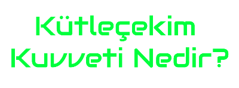

|
|
| ANASAYFA | BİLGİLER | HAKKIMDA | İLETİŞİM | |||||
| Gezegen genel tanımıyla, bir yıldız veya yıldız kalıntısı etrafında yörünge izleyen gök cisimlerine denir. Ancak bir gök cismini, gezegen olarak tanımlamak biraz zor bir iştir. Çünkü, bu tanıma aynı zamanda, asteoridler ve kuyrukluyıldızlar da uyar. Başlangıç olarak 3 maddeyle başlayalım: Bir gezegen, Kendi kütle çekimi sayesinde küresel yapı oluşturacak kadar ağır olmalıdır. Termonükleer füzyona sebebiyet vermeyecek kadar da hafif (bir yıldıza göre) olmalıdır. Çevresini gezegen oluşumundan kalan gaz ve tozlardan temizlemiş olmalıdır. Uluslararası Gök Bilim Birliği (IAU) tarafından yapılan bu tanımlamaya göre, Güneş Sistemi’mizde 8 adet gezegen bulunuyor. Bunlar; Merkür, Venüs, Dünya, Mars, Jüpiter, Satürn, Uranüs ve Neptün’dür. Bu gezegenlerin 6’sının da kendilerine ait doğal uyduları bulunuyor. Bu gezegenler incelendiğinde ise 2 alt ayrı kategoriye ayrılırlar; Kayalık Gezegenler (Merkür, Venüs, Dünya, Mars) Gaz Devi Gezegenler (Jüpiter, Satürn, Uranüs, Neptün) Bunlar dışında zamanında gezegen olarak tanımlanan Plüto, Ceres, Pallas, Vesta gibi Güneş Sistemi objeleri artık gezegen olarak tanımlanmıyor. 2005’te Astronom Mark Brown tarafından keşfedilen ve Plüto’dan daha büyük ve ağır olan Eris ve uydusu Dysnomia bu tanımlamanın yeniden düzenlenmesi gereğini ortaya çıkarttı zira; Eris, Güneş Sistemi’mizdeki en büyük 9. gök cismidir.Ayrıca gezegenlerin, yörüngeleri üzerinde bulunan artıkları süpürüp süpürmediği de önemlidir. Bunun yanında bir de yörünge eğikliği önem teşkil ediyor. Tüm bu gelişmeler ışığında Plüto’nun da bir cüce gezegen olduğu konusunda fikir birliği sağlandı. |

|
| Güneş Sistemi dışında yer alan başka yıldız sistemlerindeki gezegenleri ötegezegen adıyla tanımlıyoruz. 2009’da NASA, başka yıldızların yörüngelerindeki Dünya benzeri gezegenleri keşfetmek için, yörüngeye Kepler Uzay Teleskobu’nu yerleştirdi ve araştırmalar derhal sonuç verdi. Keşfedilen ötegezegen sayısı, günümüzde binleri buluyor ve bu sayı her geçen gün artıyor. Evrende milyonlarca gökada, bu gökadalarda milyonlarca yıldız ve bu yıldızların bir nevi uydusu olan onlarca gezegen olduğu düşünülürse keşfettiğimiz ötegezegen sayısı eksponansiyel bir şekilde artacak gibi gözüküyor. |
| Evren veya kâinat, uzay ve uzayda bulunan tüm madde ve enerji biçimlerini içeren bütünün adıdır. Pozitif bilimler açısından evren, gök cisimlerini barındıran uzay ve uzayda yer alan her şeyin toplamıdır. Enerji dalga veya partikülleri homojen ve dengeli olarak çözüldüğünde 'var oluş' ile 'anti-varoluş' olamayacağı ya da toplam karşıtları 'yok oluşta' ise bir patlama olamayacağından, evren soğuyor mu, ısınıyor mu, evrenin durması sonu mudur, Büyük patlama evrenin merkezi mi, başlangıcı mıdır, güneş evrenin merkezinde midir gibi problemler hareket veya başka deyişle zamanın popüler sorularını teşkil etmiştir. Evrenin oluşumuna dair günümüzde en çok benimsenen teori, Büyük Patlama teorisidir. Bu teoriye göre evren, sıfır hacimli ve çok yüksek bir enerji potansiyeline sahip, sıkışmış bir noktanın patlamasıyla oluştu. İlk patlamanın nasıl oluştuğu, evren meydana gelmeden önce evrenin yerinde ne olduğu ya da evrenin neyin içinde genişlediği sorularına günümüzde bile tam olarak bilimsel bir cevap bulunamamıştır, bununla birlikte evren öncesi durum, evren dışı varoluş hakkında hipotezler öne sürülmüştür. Büyük Patlama sonucunda uzun bir dönem boyunca birbirlerinden bağımsız hareket ettiler. Sürekli genişleyen evrenin her yerinde geçerli olan fizik kanunlarından kütleçekimi kanunu vasıtasıyla bağımsız gazlar birleşerek galaksileri (gök adaları) oluşturdular. Aynı evrensel fizik kanunu neticesinde gökadalar da birbirlerine yaklaşarak devasa gruplar oluşturdu. Galaksiler içinde yıldızlar ve bazı yıldızların çevresinde sistemler oluştu. İçinde yaşadığımız Güneş Sistemi bunlardan birisidir. Keşfedebildiğimiz evrende 400 milyardan fazla galaksi ve 300 sextillion (3 × 1023) yıldız olduğu tahmin edilmektedir. |
| Büyük Patlama ya da Big Bang, evrenin yaklaşık 13,8 milyar yıl önce aşırı yoğun ve sıcak bir noktadan meydana geldiğini savunan evrenin evrimi kuramı ve geniş şekilde kabul gören[1] kozmolojik model.[2] İlk kez 1920'li yıllarda Rus kozmolog ve matematikçi Alexander Friedmann ve Belçikalı fizikçi papaz Georges Lemaître [3] tarafından ortaya atılan ve evrenin bir başlangıcı olduğunu varsayan bu teori, çeşitli kanıtlarla desteklendiğinden bilim insanları arasında, özellikle fizikçiler arasında geniş ölçüde[4] kabul görmüştür. Teorinin temel fikri, hâlen genişlemeye devam eden evrenin geçmişteki belirli bir zamanda sıcak ve yoğun bir başlangıç durumundan itibaren genişlemiş olduğudur. Georges Lemaître’in önceleri “ilk atom hipotezi” olarak adlandırdığı bu varsayım günümüzde “büyük patlama teorisi” adıyla yerleşmiş durumdadır. Modelin[2] iskeleti Einstein’ın genel görelilik kuramına dayanmakta olup, ilk Big Bang modeli Alexander Friedmann tarafından hazırlanmıştır. Model daha sonra George Gamow ve çalışma arkadaşları tarafından savunulmuş ve ilk nükleosentez olayı eklenmek suretiyle [5] geliştirilerek sunulmuştur.[1] 1929’da Edwin Hubble’ın uzak galaksilerdeki (galaksilerin ışığındaki) nispi kırmızıya kaymayı keşfinden sonra, bu gözlemi, çok uzak galaksilerin ve galaksi kümelerinin konumumuza oranla bir "görünür hız"a sahip olduklarını ortaya koyan bir kanıt olarak ele alındı. Bunlardan en yüksek "görünür hız"la hareket edenler en uzak olanlarıdır.[6] Galaksi kümeleri arasındaki uzaklık gitgide artmakta olduğuna göre, bunların hepsinin geçmişte bir arada olmaları gerekmektedir. Big Bang modeline göre, evren genişlemeden önceki bu ilk durumundayken aşırı derecede yoğun ve sıcak bir halde bulunuyordu. Bu ilk hale benzer koşullarda üretilen "parçacık hızlandırıcı"larla yapılan deney sonuçları teoriyi doğrulamaktadır. Fakat bu hızlandırıcılar, şimdiye dek yalnızca laboratuvar ortamındaki yüksek enerji sistemlerinde denenebilmiştir. Evrenin genişlemesi olgusu bir yana bırakılırsa, Big Bang teorisinin, ilk genişleme anına ilişkin bir bulgu olmaksızın bu ilk hale herhangi bir kesin açıklama getirmesi mümkün değildir. Kozmozdaki hafif elementlerin günümüzde gözlemlediğimiz bolluğu, Big Bang teorisince kabul edilen ilk nükleosentez[7] sonuçlarına uygun olarak, evrenin ilk hızlı genişleme ve soğuma dakikalarındaki nükleer süreçlerde hafif elementlerin oluşmuş olduğu tahminleriyle örtüşmektedir.(Hidrojen ve helyumun evrendeki oranı, yapılan teorik hesaplamalara göre Big Bang'den arta kalması gereken hidrojen ve helyum oranıyla uyuşmaktadır. Evrenin bir başlangıcı olmasaydı, evrendeki hidrojenin tümüyle yanarak helyuma dönüşmüş olması gerekirdi.) Bu ilk dakikalarda, soğuyan evren bazı çekirdeklerin oluşmasına imkân sağlamış olmalıydı.(Belirli miktarlarda hidrojen, helyum ve lityum oluşmuştu.) Big Bang terimi ilk kez İngiliz fizikçi Fred Hoyle tarafından 1949’da, “Eşyanın Tabiatı” adlı bir radyo (BBC) programındaki konuşması sırasında kullanılmıştır.[8] Hoyle, hafif elementlerin bazı ağır elementleri nasıl meydana getirebilecekleri konusunda katkıları olmuş bir bilim insanıdır. Bilim insanlarının çoğu, evrenin başlangıcında, bir Big Bang olayının cereyan etmiş olduğuna ancak 1964/1965’te, evrenin sıcak ve yoğun döneminin kanıtı olarak kabul edilen “kozmik mikrodalga arka plan ışıması"nın ya da Georges Lemaître’in kullandığı terimlerle « Big Bang’ın soluk ışıklı yankısı»nın keşfinden sonra ikna oldular. |
| Kozmoloji sözcüğü Yunanca κοσμολογία (cosmologia, κόσμος [kozmos] düzen, bütün + λογια [logia] söylev) sözcüğünden türemiştir[3]. Her ne kadar kozmoloji sözcüğü nispeten yakın zamanlı bir sözcük olsa da evren; tarih boyunca bilim, felsefe, ezoterizm ve din gibi farklı disiplinler tarafından araştırma konusu olmuştur. Kozmoloji ise bir sözcük olarak ilk kez 1730 yılında Christian Wolff'un Cosmologia Generalis isimli eserinde kullanılmıştır.[4] Kozmoloji ile uğraşan bilim insanlarına kozmolog veya evren bilimci denir. Çağdaş yazında kozmoloji veya evren bilimi ile genelde fiziksel kozmoloji kastedilmektedir. Bu bağlamda kozmologlar, kozmoloji çalışmaların içerisinde astronominin yanı sıra biyolojiden matematiğe kadar birçok bilim dalını da kullanırlar. Kozmoloji, evrenin yapısını, tarihini ve geleceğini inceler. Fiziksel evrenin bir bütün olarak kavranıp anlaşılmasını sağlamak amacıyla doğa bilimlerini, özellikle gök bilimi ve fiziği bir araya getirir. |
|  |
| Kütleçekim ya da çekim kuvveti, kütleli her şeyin gezegenler, yıldızlar ve galaksiler de dahil olmak üzere birbirine doğru (ya da birbirine doğru çekildiği) hareket ettiği doğal bir fenomendir. Enerji ve kütle eşdeğer olduğu için ışık da dahil olmak üzere her türlü enerji kütleçekime neden olur ve onun etkisi altındadır. Dünya'da, kütleçekim, fiziksel nesnelere ağırlık verir ve okyanus gelgitlerine neden olur. Evrendeki gaz halindeki maddenin çekimi, gaz halindeki maddeyi bir araya getirerek yıldızlar oluşturmaya ve yıldızların galaksilere birleştirilmesine, dolayısıyla kütleçekimin Evrendeki büyük ölçekli yapıların çoğundan sorumlu olmasına neden olmuştur. Kütleçekim, sonsuz bir aralıkta bulunurken, uzaktaki nesneler üzerindeki etkileri gittikçe daha zayıf hale gelmektedir. Kütleçekim, kütleçekimi bir kuvvet olarak değil, kütlenin / enerjinin düzensiz dağılımının yol açtığı uzay-zaman eğriliğinin bir sonucu olarak tanımlayan genel görelilik teorisi (1915'te Albert Einstein tarafından önerildi) tarafından açıklanmaktadır. Uzay zamanının bu eğriliğinin en uç örneği, hiçbir şeyin, ışığın bile[1], ufkuna girdikten sonra kara delikten kaçamamasıdır. Daha fazla kütleçekim çekim kuvveti zaman dilatasyonuyla sonuçlanır, burada zaman daha yavaş (daha güçlü) bir kütleçekim potansiyeline daha yavaş geçer. Bununla birlikte, çoğu uygulama için, kütleçekim, kütleçekimin neden olduğu varsayılan Newton'un evrensel çekim yasasıyla anlatılır. İki cisim kütlesinin çekim kuvvetinin kütlelerinin çarpımı ile doğru orantılı olduğu ve aralarındaki mesafenin karesi ile ters orantılı olduğu matematiksel bir ilişkiye göre birbirlerine doğrudan çekilen bir kuvvet. Kütleçekim, doğanın dört temel etkileşiminin en zayıf yönüdür. Kütleçekim kuvveti, güçlü kuvvetten yaklaşık 1038, elektromanyetik kuvvetten 1036 ve zayıf kuvvetten 1029 kat daha zayıftır. Sonuç olarak, kütleçekim, atom altı parçacıkların davranışı üzerinde önemsiz bir etkiye sahiptir ve günlük maddenin iç özelliklerini belirleme konusunda rol oynamaz (ancak kuantum çekim kuvvetine bakınız). Öte yandan, kütleçekim, makroskopik ölçekte egemen etkileşimdir ve astronomik cisimlerin oluşum şekli ve yörüngesinin (yörünge) sebebidir. Kütleçekim dünya ve evren boyunca gözlemlenen çeşitli olaylardan sorumludur. Örneğin, Dünya ve diğer gezegenlerin Güneş'in yörüngesinde, Ay'ın Dünyanın Yörüngesinde olmasına gelgitlerin oluşumuna, Güneş Sistemi'nin oluşumuna ve evrimine, yıldızlara ve galaksilere neden olur. Planck döneminde (Evrenin doğumundan 10-43 saniye sonrasına kadar) geliştirilen, muhtemelen kuantum kütleçekim, süper gravite veya kütleçekim tekilliği biçimindeki evrende kütleçekimin en eski örneği, muhtemelen bir sahte vakum, kuantum vakumu veya sanal parçacık gibi ilkel bir durumdan bilinmeyen bir biçimde meydana gelmiştir.[2] Bu nedenle, kısmen her şeyin teorisinin araştırılması, genel görelilik teorisinin ve kuantum mekaniğinin (veya kuantum alan teorisinin) kuantum kütleçekime birleştirilmesi bir araştırma alanı haline gelmiştir. |